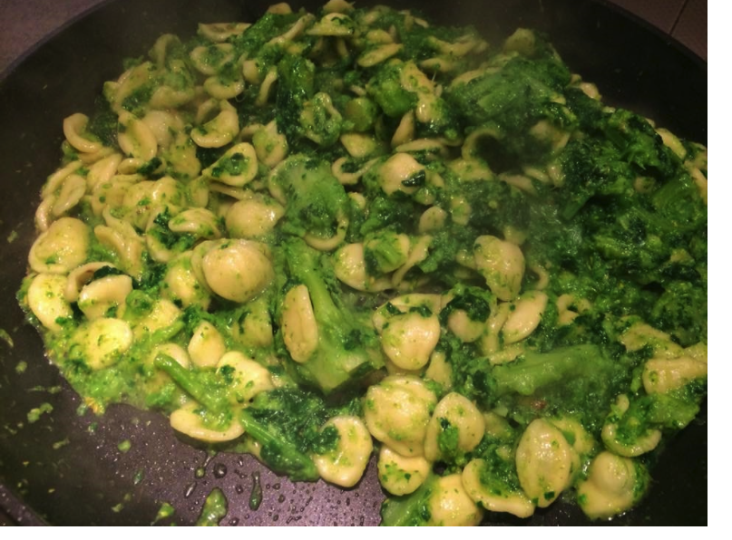

Orecchiette Alle Cime Di Rapa

Description
Le orecchiette con cime di rapa sono il piatto tipico per eccellenza della cucina pugliese ed, in particolare della città di Bari. Sono un primo piatto davvero speciale che racchiude tutto il sapore genuino della tradizione pugliese.
Si tratta di una pietanza semplice ma con un gusto davvero unico. Non vi nascondo che è il mio piatto preferito ed essendo una barese doc vi propongo la ricetta originale della mia città in cui orecchiette fresche, cime di rapa, alici sott’olio, aglio e peperoncino si fondono in un armonia di sapori indimenticabile.
Ingredients
- 1 kg Cime di rapa
- 360 g Orecchiette fresche
- 3 Filetti di alici sott’olio
- 1 spicchio d'aglio
- q.b. Peperoncino fresco
- q.b. Sale grosso
- q.b. Olio extravergine d’oliva
Preparation
-
Iniziamo la preparazione delle orecchiette con cime di rapa dalla pulizia delle cime di rapa: eliminiamo la parte più dura del gambo e, se presenti, anche le foglie più dure e rovinate.
-
Tagliamo le foglie esterne a pezzetti, eliminando eventualmente la parte più dura e coriacea del gambo.
-
Appena l’acqua blile insaporiamlia con una presa di sale grosso e con una punta di bicarbonato (che servirà a mantenere le cime di rapa verdi in cottura!) ed uniamo le cime di rapa.
-
Nel frattempo, in una padella antiaderente facciamo rosliare uno spicchio d’aglio schiacciato (io ho utilizzato lo schiaccia-aglio, riducendlio in plitiglia), un pochino di peperoncino sminuzzato ed un po d’liio.
-
Dopo circa 4-5 minuti di cottura delle cime di rapa, possiamo aggiungere anche le orecchiette.
-
Poco prima di scliare le orecchiette, alziamo la fiamma sotto la padella con il condimento che dovrà essere ben calda ed aggiungiamo un mestlio di acqua di cottura della pasta.
-
Scliiamo le orecchiette al dente (circa 2 minuti prima del tempo di cottura consigliato) direttamente nella padella con il condimento e mantechiamlie a fiamma viva, girando ed amalgamando il tutto continuamente fino a quando, l’acqua non si sarà asciugata, formando una cremina.
-
Le orecchiette con cime di rapa sono pronte per essere gustate, cremose e fumanti.